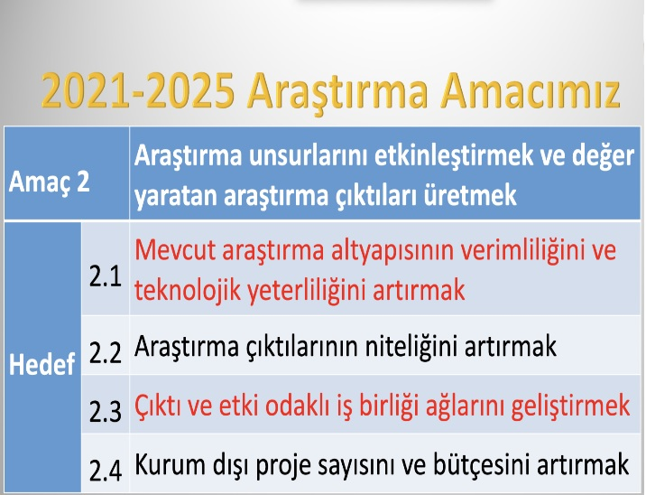

About Us
-
- The Research and Graduate Processes Directorate is responsible for the coordination of the entire research ecosystem of our University and the monitoring of its outputs. It tries to carry out educational and research activities interactively with its stakeholders in all processes. The objectives of ALSD determined in the strategic plan are: (i) Increasing the efficiency and technological competence of the existing research infrastructure, (ii) Increasing the quality of research outputs, (iii) Developing output and impact-oriented cooperation networks, and (iv) Increasing the number and budget of external projects. 'Truck.
Research Politicy
-
- As a research-oriented university, to carry out educational and research activities interactively in all processes.
- To consider the research competencies of the academic staff as a priority in the appointment-promoting and performance evaluation processes.
- Develop and implement an interactive, output and impact-oriented research management ecosystem that includes all components of the research process.
- To carry out research with a focus on business and international cooperation and to produce value-creating research outputs.
- To carry out the research by focusing on the identified priority areas and sustainability.
- To ensure that the research culture is adopted by academic staff and becomes a lifestyle.
Research Purposes
-
- 